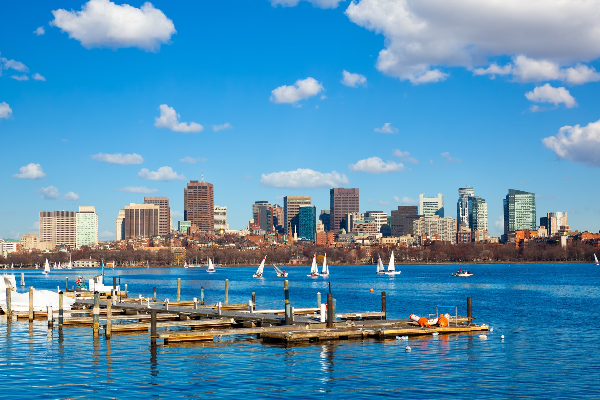

Spread across 50 square miles of protected water, the Boston Harbor Islands are one of New England's greatest natural treasures - and one of its best-kept secrets. This national and state park encompasses 34 islands and peninsulas, each with its own character, history, and beauty. While most visitors reach the islands via public ferry, exploring them aboard a private boat transforms a day trip into an extraordinary adventure.
A private charter gives you the freedom to visit islands on your own schedule, anchor in secluded coves that ferries cannot access, and enjoy the kind of unhurried exploration that makes a day on the water truly memorable. At Atlantis Charter, our captains know every island, every anchorage, and every hidden beach in the harbor.
The Must-Visit Islands
Spectacle Island
The jewel of the harbor islands, Spectacle Island is the most popular destination for a reason. Its two sandy beaches face the Boston skyline, creating a surreal experience of swimming in clear water while looking at a major city. The island features well-maintained hiking trails that climb to a summit with 360-degree views of the harbor, the city, and the ocean beyond.
On a private charter, you can anchor just off the beach, swim ashore, and explore the island before returning to the yacht for lunch. The waters around Spectacle Island are calm and shallow, making them ideal for swimming, paddleboarding, and snorkeling.
Georges Island
Home to Fort Warren, a massive Civil War-era fort that is open for exploration, Georges Island is perfect for history enthusiasts and adventure seekers. The fort's granite corridors, gun emplacements, and underground passages create an atmospheric experience that fascinates adults and children alike. The island also offers picnic areas, a visitor center, and spectacular views of the harbor and the open ocean.
Georges Island serves as the hub for the harbor island ferry system, so it can get crowded during peak season. Arriving by private boat allows you to visit during quieter hours - early morning or late afternoon - for a more peaceful experience.
Lovells Island
If you want a quieter, more rugged experience, Lovells Island delivers. It features a long sandy beach, remnants of a World War II-era gun battery, and wild trails through coastal vegetation. Lovells feels remote despite being just a few miles from downtown Boston. The swimming is excellent, and the beach is rarely crowded because it is only accessible by private boat or the inter-island water taxi.
Peddocks Island
The third largest harbor island, Peddocks is a mosaic of salt marshes, woodlands, and rocky coastline. It contains remnants of Fort Andrews, a military installation that spans multiple eras. The island has a wild, untamed quality that makes it feel like a genuine escape from the city. Kayakers and paddleboarders love exploring its irregular coastline from the water.
Thompson Island
Located closest to the city, Thompson Island is home to an outdoor education center and offers beautiful salt marshes, hiking trails, and harbor views. Access by private boat allows you to explore without joining a scheduled program.

Planning Your Island-Hopping Charter
Recommended Duration
A full-day charter (8 hours) is ideal for island-hopping because it allows you to visit 2-3 islands at a leisurely pace. Half-day charters (4 hours) work well if you want to focus on one island with time for swimming and exploring. For our complete guide to charter planning, see our ultimate charter guide.
Best Routes
Our captains recommend these popular island-hopping routes:
- The Classics: Spectacle Island for swimming and views, then Georges Island for Fort Warren. Works well as a half-day or full-day charter.
- The Explorer: Start at Thompson Island, cruise to Spectacle for a swim, then continue to Georges Island and Lovells Island. A full-day adventure.
- The Escape: Head directly to Lovells or Peddocks Island for a quiet day of beach time, hiking, and relaxation away from the crowds. Perfect for couples and small groups.
- The Grand Tour: A full circuit of the inner and outer harbor islands with lunch anchored off Spectacle. This route covers 5+ islands and is ideal for sightseeing groups and photographers.
What to Bring
Island-hopping charters benefit from a few extra preparations beyond a standard cruise. Pack swimwear, water shoes for beach landings, sun protection, and a light jacket for the return trip. Binoculars are wonderful for birdwatching and spotting harbor seals. For a comprehensive list, see our complete packing guide.
Activities on the Water
The waters between the harbor islands are perfect for a variety of activities that extend beyond simple sightseeing:
- Swimming: The harbor's water quality has improved dramatically over the past two decades. The beaches on Spectacle and Lovells islands offer clean, refreshing swimming from June through September.
- Paddleboarding and kayaking: Many of our yachts carry paddleboards and inflatable kayaks. Exploring the island coastlines at water level provides a completely different perspective.
- Fishing: The waters around the harbor islands hold striped bass, bluefish, and flounder. Combine island exploration with a few hours of fishing for the ultimate day on the water. See our fishing charter guide for species details.
- Wildlife watching: Harbor seals haul out on rocky shores from October through May. Ospreys nest on several islands during summer. Herons, egrets, and cormorants are common sights year-round.
- Photography: The combination of historic structures, natural landscapes, city skyline views, and maritime activity makes the harbor islands a photographer's paradise.
Seasonal Considerations
- May-June: Islands are green and blooming. Beaches are quiet. Water temperatures are cool but refreshing. Excellent birdwatching as migratory species arrive.
- July-August: Peak season. Warm water for swimming. Islands are at their busiest, but a private boat gives you access to secluded spots that ferry passengers cannot reach.
- September-October: Fall foliage transforms the islands. Fewer visitors. Water remains warm enough for swimming through mid-September. Perhaps the most beautiful time to visit.
Dining on Your Island Charter
One of the great advantages of a private charter is the ability to enjoy excellent food while anchored in a beautiful setting. Options include:
- Catered lunch: Our culinary partners prepare picnic-style or plated meals that are served aboard the yacht while anchored off an island beach.
- Lobster bake: For the ultimate New England experience, arrange a traditional lobster bake with clams, corn, potatoes, and fresh lobster.
- DIY picnic: Bring your own food and provisions. We provide coolers, ice, and serving ware.
- Fresh catch: If you fish during your charter, our crew can prepare your catch right on the boat for the freshest possible meal.
Discover the Harbor Islands
Let our experienced captains guide you through Boston's island archipelago aboard a private yacht.
Plan Your Island Charter